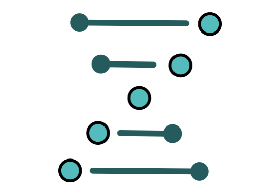

Welcome to lixueqi-ursa Pages. It's under construction!
You can ref my homepage lixueqi
One more website is under construction ursa
You can ref my homepage lixueqi
One more website is under construction ursa
Currently, I got some pictures from the gap website and I will update these pictures later. Genomic algorithms are becoming increasingly important, with applications covering a wide range of scales, from whole-genome analysis on warehouse-scale computers to xxx. The Genomic Analysis Platform Project spans the entire stack, and it aims to accelerate genomic algorithms through software optimization and hardware acceleration. Some of the outcomes so far are:
High Performance Frameworkfastest genomic framework on Tianhe-2 supercomputer |
Workload Characterizationidentify genomic processing bottlenecks |
Genomic Benchmark Suitestandardize evaluations with specification + reference code |
|  | ||
PIM-Aligneraccelerating sequencing alignment with near-memory processing techniques |
Hardware Acceleratorhardware/software co-design for FM-index algorithm |
One-more ThingBioinformatics + AI |
...
...